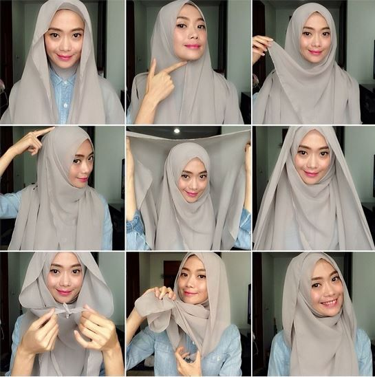

Artikel
Back-
TIPS KECANTIKAN
-
TUTORIAL HIJAB
-
5 ATURAN ISLAM UNTUK WANITA MUSLIMAH
Tips Memilih Busana Wanita Berdasarkan Bentuk Tubuh
CloseMANFAAT KOPI UNTUK KECANTIKAN KULIT WAJAH DAN TUBUH
Cara Melangsingkan Badan Secara Alami
CloseTutorial 1
Close Tutorial 2
CloseTutorial 3
CloseTutorial 4
CloseTutorial 5
Close
Tutorial 6
CloseTutorial 7
CloseTutorial 8
Close
Tutorial 9
CloseTutorial 10
CloseTutorial 11
CloseTutorial 12
Close
Tutorial 13
CloseTutorial 14
CloseTutorial 15
CloseTutorial 16
CloseBagian 1: Fiqih Perempuan
1. Dalam menyentuh Al-Quran tidak ada larangan bagi perempuan yang sedang berhalangan, hanya beberapa ulama berpendapat maksud dalam keadaan suci adalah berwudhu.
2. Menjamak shalat karena tuntutan pekerjaan juga tidak dilarang, bukan maksud untuk menggampangkan melainkan Islam memudahkan umatnya untuk melaksanakan ibadah.
3. Batasan dan aturan berjilbab pada perempuan hanya sebatas muka dan telapak tangan, bila ada yang menganjurkan memakai cadar itu hanya kalangan minoritas ulama saja yang menganjurkan. Adapun alasan berjilbab adalah menahan dan menjaga perempuan dari nafsu birahi lawan jenis.
4. Hukum waris perempuan tentu tidak sama dengan laki-laki karena laki-laki lebih banyak memikul tanggung jawab seperti menafkahi istri dan anaknya, ia hanya cukup menolong saudarinya apabila saudarinya lemah dalam permasalahan ekonomi.
5. Aturan berpakain bagi perempuan di kolam renang adalah tidak terlalu ketat dan dianjurkan untuk berpisah tempat dari yang bukan muhrim agar tidak menimbulkan nafsu birahi.
6. Dipijat dengan laki-laki yang bukan mahram tentu tidak boleh walaupun dengan alasan yang memijat adalah banci, karena seperti alasan sebelumnya ditakutkan menimbulkan nafsu birahi walaupun diizinkan oleh suami kecuali ia adalah orang serumah dan tidak memiliki nafsu birahi terhadap perempuan.
7. Berpuasa tidak diwajibakan bagi wanita hamil dan menyusui karena dikhawatirkan menganggu diri dan kesehatan janin. Sebagai kompensasi, ia dapat membayar fidyah.
8. Membuka aurat di hadapan dokter laki-laki dan demi kesehatan tidak dilarang asalkan ditemani keluarga agar tidak menimbulkan nafsu birahi.
9. Hukum shalat di rumah non muslim adalah tidak haram asalkan tidak berhadapan dengan salib atau patung misalnya karena menimbulkan kemusyrikan.
10.Shalat istikharah sama seperti shalat sunnah lainnya dua rakaat dengan niat untuk meminta kepada Allah memilih antara beberapa pilihan yang baik.
11.Memakan makanan yang mengandung babi tidaklah haram apabila tidak diketahui dan cukup berdoa meminta ampunan
12.Ketetapan mengenai mandi atau berwudhu dulu setelah berhubungan badan adalah tidak masalah dengan keduanya mana yang didahulukan, karena apabila hanya mandi saja tidak berwudhu sudah sama seperti wudhu karena mandi adalah menghilangkan hadats besar.
13.Masa nifas perempuan menurut beberapa mazhab ada yang 25 hari bahkan 60 hari, namun jika darah keluar setelah 40 hari maka harus tetap harus mandi dan shalat walaupun darah masih keluar.
14.Masa iddah bagi perempuan adalah tiga kali haidnya dan apabila nikah mut’ah menurut pandangan Syiah adalah dua kali haidnya.
15.Bilamana istri ingin berjilbab namun suami melarang akan lebih baik mendengar terlebih dahulu dan memberitahu kepada suami secara perlahan mengenai anjuran Islam.
16.Anjuran menerapkan sistem KB apabila karena masalah ekonomi tentu tidak dilarang dan tidak ada unsur paksaan walaupun Rasulullah Saw. menghimbau untuk memperoleh anak yang banyak dan berkualitas.
17.Shalat dikelilingi oleh anak/cucu tidak dilarang bahkan rasul mengendong cucunya saat shalat dan lama sujud dikarenakan cucunya sedang bermain di punggung beliau.
18.Melayani mertua yang sedang sakit tentu tidak dilarang namun diusahakan tidak secara langsung memandang auratnya dan apabila terpaksa menyentuh maka menggunakan alas seperti handuk misalnya.
Bagian 2: Pernikahan
Close19) Batasan berpacaran dalam Islam tentu ada apalagi sampai laki-laki tersebut memaksa untuk melakukan perbuatan maksiat dan hal seperti ini lebih baik dihindari/ditinggalkan karena ditakutkan berbuat zina.
20) Aturan berpoligami tidak dilarang oleh agama selama dapat berlaku adil. Aturan yang mengenai izin istri apabila tidak dilandaskan dengan alasan logis maka tidak diperlukan izin istri.
21) Aturan poliandri tidak ada dalam Al-Quran karena tidak mungkin seorang perempuan mengandung anak dari berbeda laki-laki.
22) Ta’aruf dalam perjodohan dianjurkan oleh Rasulullah dengan maksud untuk meminang, yaitu dengan melihat calon terlebih dahulu agar tidak menyesal kemudian.
24) Perkawinan berbeda agama diharamkan untuk perempuan muslimah terhadap lelaki musyrik. Namun tidak sebaliknya asalkan dengan perempuan Yahudi atau Nasrani yang “terhormat” dalam maksud taat beragama.
25) Pernikahan tanpa kehadiran salah satu mempelai dibenarkan apabila identitas para calon sah dan diwakili oleh walinya yang sah pula.
26) Apabila seseorang dijodohkan dengan seseorang bukanlah durhaka apabila menolak melainkan menyangkut kebebasan pribadi karena membahagiakan atau berbakti tidak hanya sebatas menerima lamaran tersebut.
27) Pengantin pria dan perempuan yang dipisahkan dalam resepsi boleh dilakukan bahkan tidak dipisahkan dan berbaur antara perempuan dan laki-laki tidak masalah asalkan tetap menjaga pandangannya.
28) Hukum kawin lari dalam Islam maupun Negara tidak sah dikarenakan dalam Islam membutuhkan wali dari perempuan dan tidak diakui oleh Negara karena hal ini ditakutkan apabila terjadi apa-apa maka keluarga menjadi tempat mengadu.
29) Melanjutkan perkawinan dengan suami yang murtad tidak dianjurkan bahkan menurut sebagian ulama agar bercerai.
30) Wewenang menceraikan jatuh kepada suami bukan istri dikarenakan ia memiliki tanggung jawab dan membelanjakan keluarganya, bayangkan apabila wewenang menceraikan jatuh kepada istri maka suami akan rugi berkali-kali.
31) Seseorang yang tidak kawin tentu akan mendapat pasangan di akhirat dengan sebaik-baiknya apabila niat menikah namun ajal menjemputnya duluan, misalnya.
32) Menikah dengan unsur paksaan tidak dibenarkan terutama terhadap wali dan tidak mempunyai kuasa penuh, bilamana pernikahan tidak disetujui oleh wali maka wanita yang dewasa dan cerdas tentu saja yang mengawinkan mereka adalah KUA.
33) Menjatuhkan talak saat menstruasi tidak boleh selain melewati haid selama tiga kali hal ini dimaksudkan Rasul agar para suami berfikir secara matang untuk menalak istrinya.
34) Perlunya meriwayatkan kesehatan kepada calon suami/istri karena mempunyai kaitan erat dengan kebahagiaan.
Bagian 3: Seputar Hubungan Suami Istri
Close35) Menyadarkan suami yang lalai shalat lima waktu adalah fungsi dari suami istri untuk saling membantu dan membimbing karena suami adalah pemimpin tanpa kesewenangan.
36) Aturan suami untuk menjaga perasaan istri tentu ada karena suami istri hendaknya menjaga perasaan, menutupi kekurangan, bahkan saling memuji.
37) Mengenai memukul suami jika berbuat salah tidak dianjurkan cukup dengan memberi tahunya karena secara fisik laki-laki lebih kuat daripada perempuan.
38) Mendoakan suami agar mendapat peringatan keras dari Allah tentu dilarang lebih baik mendoakannya agar diberi petunjuk karena doa baik belum tentu dijabah apalagi doa buruk.
39) Jika istri keluar rumah diwajibkan mendapat izin dari suami karena suami mempunyai tanggung jawab penuh terhadap istri apapun kondisinya dan haram hukumnya istri yang keluar rumah tanpa seizin suami.
40) Menolak ajakan hubungan seksual terhadap suamipun tidak dianjurkan karena nafsu birahi laki-laki lebih besar daripada perempuan dan ditakutkan terjadinya perselingkuhan.
41) Hukum mendebat suami dianjurkan apabila itu menuju kebaikan bukan keburukan.
42) Menyikapi suami yang sering berbohong adalah menyikapi dengan bijak dan memohon doa kepada Allah Swt. agar diberi petunjuk.
43) Oral seks tentu tidak dianjurkan oleh Rasulullah karena berbeda dengan adat timur kita.
44) Mandi berbarengan dengan suami tidak diharamkan.
45) Perlakuan suami terhadap istri dengan membentak tidak diperbolehkan dikarenakan bila istri salah maka dibimbing dengan kelembutan dan memaafkan bila ia keliru.
46) Menyikapi suami yang kejawen alias mengikuti adat jawa belum tentu sesat. seharusnya istri mengikuti suami namun ditekankan tidak mengikuti apabila keluar dari ajaran islam.
47) Bertukar peran dengan suami tidak dilarang misalnya gantian mengurus anak, asalkan sebuah keluarga dan anak dididik dan berjalan sesuai dengan kesepakatan.
48) Menyikapi suami yang korupsi apabila sudah memperingatinya berkali-kali maka hal paling terakhir yang ditempuh adalah melaporkannya kepada pihak yang berwenang.
49) Hubungan suami istri saat sedang haid dilarang, karena menurut hadits juga telah disebutkan bahwa gauli istri dalam keadaan ia telah suci.
50) Masa iddah bagi istri yang suaminya meninggal adalah masa tunggunya empat bulan sepuluh hari.
51) Jika istri mengetahui suaminya menggunakan narkoba maka perlu dibantu misalnya dengan membawa ke pusat rehabilitasi dan memohon doa kepada Allah Swt.
Bagian 4: Seputar Pemeliharaan dan Pendidikan Anak
Close52) Menyikapi ketiadaan anak dalam rumah tangga dapat disiati dengan kesepakatan suami istri apakah ingin mengadopsi ataupun keridhaan istri bila suami menikah lagi.
53) Nama yang baik untuk laki-laki sangat baik dipersiapkan sebelum kelahiran karena nama yang baik adalah apa yang dicita-citakan oleh orang tua akan seperti apa anaknya kelak.
54) Status mengenai bayi tabung tidaklah haram asalkan dihasilkan dari ayah dan ibu kandungnya.
55) Sifat mutlak seorang anak adalah meniru kebiasaan orang tua baik maupun buruk, maka akan lebih baik bila ia memperhatikan kedua orang tuanya shalat dan mengajarkannya secara perlahan bacaan tentang shalat.
56) Usia untuk mengkhitan anak laki-laki tidak ada aturan dalam usia berapa seorang anak di khitan namun sebagian ulama berpendapat semakin cepat semakin baik.
57) Hukum aqiqah bagi anak laki-laki adalah mengurbankan 2 ekor kambing dan anak perempuan 1 ekor kambing, namun bila orang tua hanya menyanggupi 1 ekor kambing saja untuk laki-laki tidak masalah.
58) Membedakan antara anak seperti lebih menyayangi salah satunya tidak dibolehkan karena membuat anak merasa tidak adil dan mempengaruhi psikologinya.
59) Bilamana seorang anak melanggar perintah ayahnya karena ingin bertemu dengan ibunya tidaklah berdosa karena dalam Al-Quran telah dijelaskan bahwa berbaktilah kepada kedua orang tua walaupun merekea durhaka kepada Allah Swt.
60) Kewajiban orang tua terhadap anak ada sejak sebelum seorang anak lahir dan ketika lahir ia mulai disusui, di didik, dan membuatnya mandiri dalam perkawinan.
61) Hukum menshalati bayi yang meninggal diwajibkan karena tidak hanya menghilangkan dosanya walaupun belum berdosa dan alasan kedua adalah doa untuk keluarga yang ditinggalkan.
Bagian 5: Perawatan Diri, Gaya Hidup dan Perempuan Bekerja
Close62) Memakai kuteks bagi perempuan tidak dianjurkan karena hal itu tidak membuat wudhunya menjadi tidak sah.
63) Merawat diri di salon umum tentu tidak dibolehkan karena perempuan hanya bisa disentuh oleh suami atau mahramnya namun apabila dalam keadaan mendesak tidak menjadi masalah namun akan lebih baik mencari salon muslimah.
64) Mengkomsumsi obat yang terdapat kandungan babi di dalamnya tidak dilarang selama dalam keadaan mendesak dan hanya obat tersebutlah yang dapat menyembuhkan penyakit.
65) Menggunakan parfum yang berkandungan alkohol bagi perempuan tidak dianjurkan karena akan membuat pihak lain terangsang oleh baunya, bukan berarti perempuan harus bau keringat melainkan lebih menjaga kebersihan.
66) Dalam hal berpuasa untuk menguruskan badan tidak ada permasalahan asalkan demi untuk kesehatan pula.
67) Hukum menggunakan susuk sangat diharamkan hanya dengan alasan tidak percaya diri karena bagaimanapun perempuan akan lebih cantik apabila menjadi dirinya sendiri.
68) Berdandan berlebihan tidak dianjurkan karena akan menarik perhatian pihak lain terutama lawan jenisnya yang ditakutkan menimbulkan nafsu birahi.
69) Hukum ke diskotik tidak masalah tetapi yang ditakutkan adalah mengkomsumsi obat-obatan, minuman terlarang bahkan maksiat sehingga jauhilah orang-orang yang berdampak buruk untuk kita seperti filsuf Mulla Shadra mengatakan bahwa semakin dekat kamu dengan seseorang, maka kamu akan menjelma seperti ia.
70) Boleh atau tidak perempuan tampil sebagai pemimpin tentu tidak ada larang bahkan Islam menganjurkan perempuan untuk berguna di masyarakat, namun apabila masih ada laki-laki yang lebih baik memimpin maka biarkanlah laki-laki untuk memimpin karena secara umum perempuan lebih banyak menggunakan perasaannya daripada akalnya.
71) Mempercantik diri dengan suntik & operasi plastik demi kecantikan juga tidak dianjurkan karena mengubah yang diberikan kepada Allah dan ditakutkan akan mempunyai dampak buruk bagi kesehatan untuk jangka panjang.
72) Tidur sekamar dengan teman kantor tidak dianjurkan walaupun beralasan teman karena ditakutkan mengundang nafsu birahi.
73) Perempuan yang meninggalkan keluarga demi mencari nafkah tidak dilarang selama ia bisa mencurahkan kasih sayang dan perhatiannya kepada suami dan anak-anaknya.
74) Penggunaan hukum tato di badan sangat dikutuk oleh Allah karena telah melampaui batas dengan mengubah-ubah anggota tubuh yang telah diciptakan oleh Allah Swt.
75) Meluruskan dan merapatkan gigi yang berjarak tidak dilarang dengan maksud untuk memperbaiki karena Allah menyukai keindahan.
76) Berjabat tangan sambil menyentuh pipi dengan yang bukan muhrimnya tidak dianjurkan walaupun dengan alasan rekan bisnis atau teman.
77) Mencukur dan merapikan alis tidaklah dilarang apabila sesuai dengan kebutuhan perempuan dengan maksud untuk merapikan. Namun yang dilarang adalah mencukur habis karena mengubah ciptaan Allah Swt.
Demikianlah 77 aturan-aturan islami tentang wanita yang merupakan pilahan dari buku pilihan yang ditulis Quraish Shihab. Semoga kita menjadi wanita muslimah yang mulia. Karena perempuan adalah tiang bangsa, kata Rasulullah Saw. Jika wanitanya mulia, bangsa, generasi dan peradabannya juga mulia. Begitupun sebaliknya.